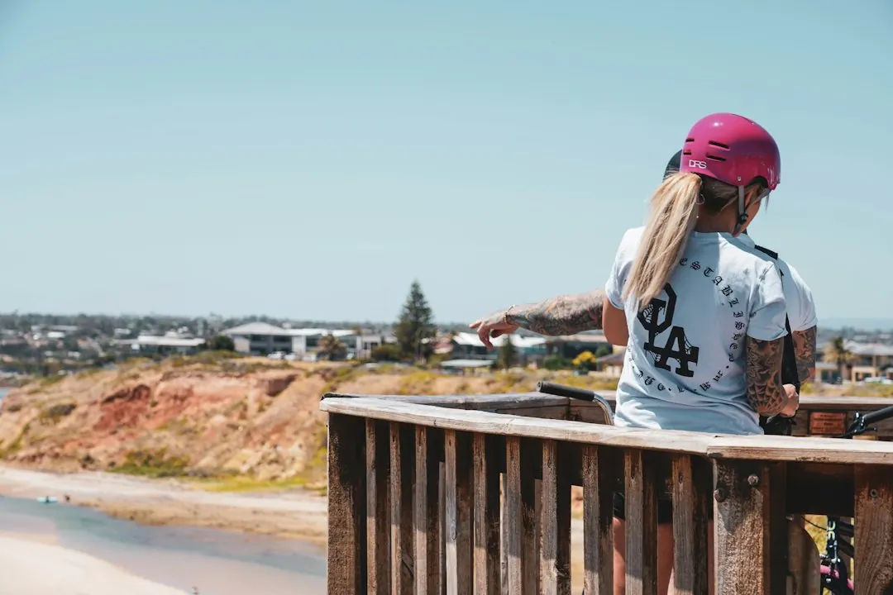

An older Adelaide switchboard may need attention when ceramic fuses remain, circuits trip repeatedly, the board is damaged or safety switches are absent. A licensed electrician should inspect the board, wiring and supply before recommending repair or replacement. The work can include modern breakers, safety switches, circuit testing and labelling. Power is disconnected while the board is changed, and the finished work comes with a Certificate of Compliance.
For homeowners comparing switchboard upgrades adelaide options, the useful starting point is the condition of the existing board, the reason for the work and what electrical additions are planned next.
Switchboard Upgrades Adelaide Explained
Switchboard Upgrades Adelaide explains that repeated tripping does not automatically mean the whole board must be replaced. The cause may sit in an appliance, old wiring or the board itself, so an electrician needs to inspect the installation before a homeowner commits to a full replacement.
Ceramic fuses use fuse wire that must be replaced when they blow. Modern circuit breakers can be reset after the fault has been dealt with, while safety switches cut power quickly when current leaks. These are different functions, so a quote should identify which protection is present and what will be added.
- Note which circuit trips or which fuse blows.
- Record whether the problem follows one appliance or appears across the home.
- Tell the electrician about buzzing, a burning smell or hot power points near the board.
Smoke or sparks require an urgent response. The published guidance says to call 000 if either is seen.
What an inspection should examine
Older Adelaide homes can combine an ageing board with wiring from the same era. Stone villas, cottages and character homes in Kent Town, Wayville and North Adelaide may therefore need the board and wiring considered together. The location alone does not determine the work, but the age and condition of the installation can change its scope.
The electrician should check the existing panel, circuit protection, available space, wiring behind the board and the supply entering the property. A board with an empty position does not automatically have enough supply capacity for another large appliance. If the project includes solar, a battery, an EV charger, ducted heating or induction cooking, those plans should be discussed before the board is selected.
Possible asbestos backing is another quote input. Older boards can sit on asbestos panels, so the removal approach and handling arrangements need to be considered as part of the planned work. Ask what has been observed, what is included and what would require a separate decision.
Choose the work that matches the condition
The appropriate scope depends on the fault and the board's condition. A repair may suit a problem outside the board, while replacement may be appropriate for an old, crowded or worn panel. Safety switch installation can also be considered where the existing board remains suitable for that work.
Fault finding is the sensible starting point when one circuit keeps tripping and the cause is uncertain. A full replacement is broader, swapping the old panel for circuit breakers and safety switches. Where new appliances or charging equipment are planned, the electrician also needs to assess available space and the incoming supply.
A clear quote should state the agreed work and price before the supply is disconnected. Ask whether testing, circuit labels, removal of the old panel, possible asbestos handling and supply changes are included. Concealed problems can still alter the scope where old wiring or the mains supply needs further attention.
Plan the job around the home
Power is disconnected while the old board is swapped for a new one, so lights and appliances stop during the work. The duration depends on the board and the wiring behind it. Ask how access will work, which circuits are included and what needs to be available on the day.
Electrical installation work is not a home DIY task. The published guide distinguishes simple household actions such as replacing a light globe from electrical installation work. Replacing a switchboard belongs with the electrician. The completed job should include testing, circuit labels and a Certificate of Compliance.
Before accepting a quote, confirm the proposed board, the number and arrangement of safety switches, treatment of the old panel, possible asbestos handling, any supply changes and the process for concealed issues. These details make different scopes easier to compare.
Who this guide applies to
This guide is for owners and occupants of older Adelaide homes who are seeing ceramic fuses, repeated tripping, damaged equipment or limited protection at the switchboard. It also applies to homeowners planning an EV charger, solar, a battery, ducted heating or induction cooking and wanting to understand the electrical work before installation.
It is not a diagnosis from a photograph. The condition of the board, wiring and supply has to be established on site. For a separate locality reference, the guide to switchboard work in Adelaide homes can be read alongside this checklist.
When requesting a review, describe the circuit that trips, the age or type of the board, any urgent signs and the appliances or energy equipment planned next. Those details help define whether the next step is fault finding, added protection or a broader replacement.
- Describe the symptom. Record which circuit trips or which fuse blows, and note any buzzing, burning smell or hot power points.
- List planned additions. Mention solar, a battery, an EV charger, ducted heating, induction cooking or other new electrical loads.
- Request an inspection. Ask the electrician to assess the board, wiring, available space, supply and possible asbestos backing.
- Check the quote. Confirm the agreed work, price, protection devices, testing, labels and treatment of concealed problems.
- Keep the certificate. After completion, retain the Certificate of Compliance supplied for the electrical work.
| Option | Useful when | Questions to ask |
|---|---|---|
| Fault finding or repair | A circuit keeps tripping but the cause may be an appliance or wiring | What caused the fault, and has it been fixed? |
| Safety switch installation | The board needs additional protection without a full replacement | Which circuits will be protected? |
| Full replacement | The panel is old, damaged, crowded or unsuitable for planned work | What breakers, switches and testing are included? |
| Capacity upgrade | New appliances or charging equipment are being planned | Is spare space enough, and is the supply adequate? |
Common questions
Will power be disconnected during the work? Yes. The supply is isolated while the old board is changed, so lights and appliances stop for a period. The duration depends on the board and wiring.
Does repeated tripping always require a new board? No. The fault may be in an appliance or old wiring. An electrician should identify the cause before recommending repair or replacement.
Can a new board support any future appliance? No. Spare space does not by itself prove that the supply has enough capacity. Planned additions should be assessed with the board and incoming supply.
What document should follow the upgrade? The published guide says the electrician provides a Certificate of Compliance after the work is finished.
This guide covers switchboard condition, fault checks, safety switches, quote scope, capacity planning and completion documents for older Adelaide homes.